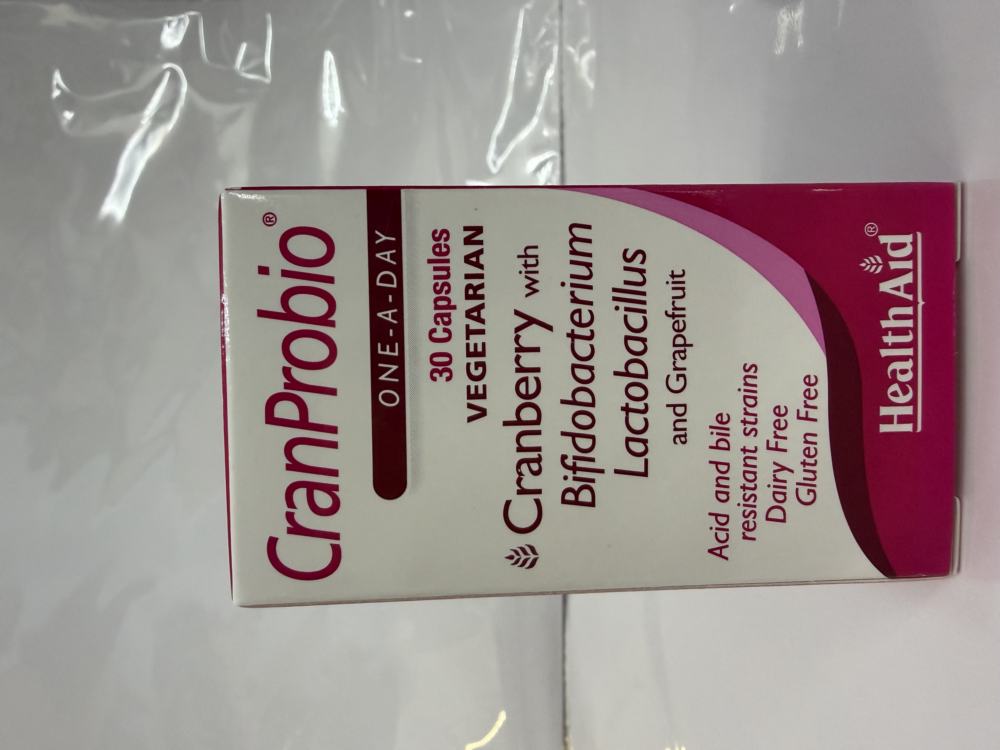
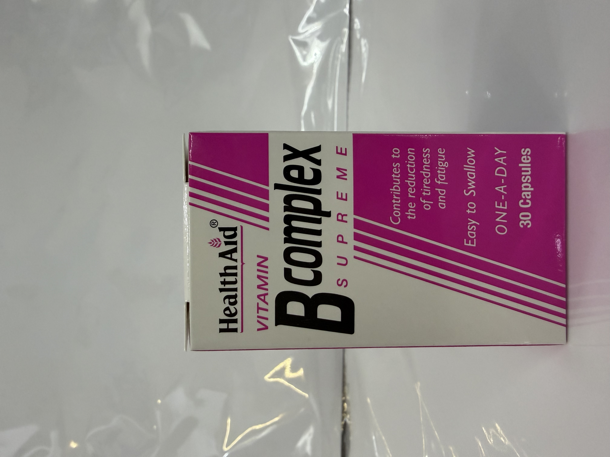

保健品介绍
CranProbio 蔓越莓 30粒

成分：
蔓越莓果實提取物 (Vaccinium macrocarpon)、葡萄柚油粉 (Citrus grandis)、膠囊殼 (微晶纖維素、水)
功效：
CranProbio 是一種獨特的高強度益生菌補充劑，結合了蔓越莓和葡萄柚的好處，其獨特的耐酸和膽汁耐受菌株具有特殊健康益處
適合：
12歲以上成人和兒童，每日建議攝取一顆膠囊，建議在空腹時服用
維他命B複合片 30粒

成分：
維生素B1、維生素B2（核黃素）、維生素B6、泛酸、對氨基苯甲酸、葉酸、維生素B12
功效：
B族維生素有助於減少疲勞和疲憊，維持神經系統和免疫系統的正常功能，維持正常的心理功能，維持正常的頭髮和皮膚功能，維持正常的代謝，維生素B6有助於荷爾蒙活動的調節
適合：
12歲以上成人和兒童
葉酸400μg 90粒
成分：
填充剂（磷酸二钙、微晶纤维素）、抗結剂（植物性硬脂酸镁、植物性硬脂酸、二氧化硅）、葉酸（每片含量400μg）
功效：
叶酸属于B族维生素成员，葉酸有助於運氣母體組織的生長
適合：
計劃懷孕和早期孕婦